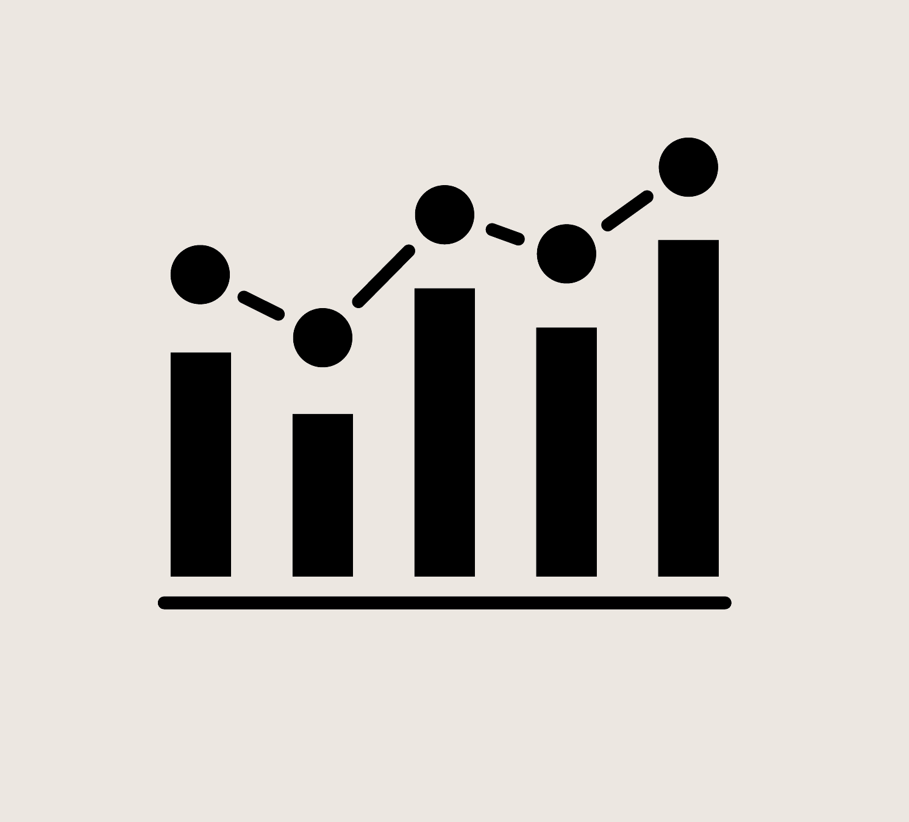

Iterative
Design
An exploration in consumer psychology and decision-making

What is iterative design?
Iterative design is a design methodology which includes the cyclic, step-by-step process of prototyping, conducting user testing, analyzing responses, and
refining the product to make the best possible design choices.
In this project, I practiced this iterative design process to build a product for a YC sneaker startup, WANTD.
Tools Used:
-
Figma, Balsamiq WireFrames
Existing Research
Existing research proves the benefits/perks of the iterative design process:
- It helps maintain an overall robust framework for the elaborate process of creating a new product
- It allows for us to collect detailed, real feedback at every stage of the process
- It helps throughly analyze the design before putting effort into advanced prototypes or testing the actual product
- It requires for lesser focused manpower and time as the overall process of redesigning is short-circuited
Background
Context and Process
- For this project, with my group, I went through the entire process of iterative design as done in industry
- To do this, we picked a startup, understood their target audience and came up with varying sketches for a site with them in mind
- After this we made lofi wireframes based on the sketches followed by an initial hifi prototype, including interactive elements
- This protype was then presented to users and peer feedback was noted
- Based on peer feedback, the hifi prototype was revised and made to fit consumer needs better
- Lastly, we got feedback from anonymous users from around the world based on specific questions targeted towards consumer psychology
Psychology Considerations
- Theory of Reasoned Action: The theory that proves that users make decisions if they are easily justifiable, this implies that providing strong arguments and reasoning right before interactive buttons makes users more likely to click them
- Hawkins Stern Impulse Buying: Reducing the steps to secure a purchase (ease to naviagte to cart/click buy) on impulse
- Theory of Buyer Behavior: This theory means that reliable repetition makes buyers likely to establish a familiar purchasing routine to save time and simplify decision-making. This is used by us in the weekly statistics/insight page, setting such a routine/pattern
- Automatic Processing (Model I): Humans have a Dual Model of Processing Information, for effecient and quick interaction, we seek to tap into Model I, ie.e the automatic mode.
Startup Incentives
We chose WANTD, an online sneaker marketplace specifically for sneaker resale. It aims to facilitate fast, efficient resale for resellers and buyers. Its concept includes:
- Virtual storefronts
- Bulk inventory management for resellers, using bulk listing tools
- Live video auctions
We also saw it as a hub for lovers of sneaker culture. The concept interested us - we wanted to see how we could make it feel like a sneaker site as opposed to any e-commerce fashion site.
Step 1: Initial Sketches
Brainstroming different design choices, we came up with different sketches for the Home/Browse, Products and Seller's Profile pages
Sketch 1:
Relying on cognitive schema the most as it looks like a cliche online store
Home
Products
Seller's Profile
Sketch 2:
Relying on impulse buying/Hawkins Stern Impulse Buying the most with immediate action buttons
Home
Products
Seller's Profile
Sketch 3:
Relying on Theory of Buyer Action the most as seen in the repetition of components
Home
Products
Seller's Profile
Step 2: Lo-Fi Wireframes
Brainstroming different design choices, we came up with different sketches for the Home/Browse, Products and Seller's Profile pages
1. Home
2. Login
3. Browse
4. Browse - Add Item

5. Cart
6. Seller's Profile
7. Sell
- For Home, we decided to keep it simple - lots of images, minimal text. We included a Trending section for sneaker fanatics and Top Sellers to make things fun.
- We included multiple login options to cater to different kinds of users.
- We kept the shopping page visual and clean, with immediately visible filtering options for easier searching. Hearts can be used to 'save' or 'follow' an item.
Step 3: Hi-Fi Mockup
We made a hi-fi prototype, and received and incorporated feedback to make this final version. Expand to interact with it in full screen!
Step 3: Critique/Peer Feedback
This table summarizes the critiques we received and how we addressed them in our final hi-fi mockup. (For a visual aid, compare the final mock-up to the lo-fi wireframes!)
| Original Hi-Fi | Critique | Final Hi-Fi |
|---|---|---|
| The image of shoes on the home screen took up the whole screen. |
|
Added downwards arrow at the bottom of the image to indicate that users can scroll. |
| Inventory management options included 'List' and 'Unlist'. | Users were confused about what 'Unlist' would do. | Added information icons next to buttons and headings that might require explanation or instructions. |
| Side list of tabs in Profile just had a few main tabs. | Hierarchy within the profile was unclear to some users. |
|
Step 4: User Testing
We conducted three user tests. See below for the information we provided our users, as well as the results!
Main Task: Find a popular sneaker on the online reselling platform and add it to cart so you can purchase it.
Steps needed to accomplish this:
- Log into your account on the website.
- Browse for the desired sneaker.
- Add the sneaker to cart.
Links to Videos of User Attempts:
Analyses of Results
As expected, all three users completed the main task and subtasks (login, browse for shoe, add to cart) with minimal errors.
- The average ratings for the ease of the subtasks were 4.7/5 (logging in), 4.3/5 (browsing), and 5/5 (adding to cart), demonstrating the site's straightforward usability. Given the intuitive layout and icons we chose, we did not expect major issues - users commented that site was simple to navigate.
- Slight Errors: Users encountered minor complications during subtask 2 - browsing. Users 1 and 3 first attempted to find the shoe with the menu search icon, and said they wished they could search directly in the searchbar.
- Potential Improvements: While users said they understood that the prototype lacked full functionality, their behaviour showed the instinct for users to use a search bar when tasked with browsing. Future versions of the prototype should make it interactive to address this.

Takeaways
Conclusions in Consumer Psychology
- Placement of buttons right after vibrant pictures and clickbait-y catchphrases leads to impulse buys due to Hawkins Stern Impulse Buying
- User decision-making is highly prone to parse what is faimilar or recognizable based on conceptual models and Theory of Buyer Behavior
- I observed actual data to support why recognizing is better than learning or relearning as there is readily available Automatic Processing (Model I)
- The high speed and success rate of the users is due to the low-text high-image layout and the representative heuristics
Reflections
- From this project, I learnt to collect feedback from users appropriately, at every stage
- I learnt to pay more attention to design choices and look closely at protoyping